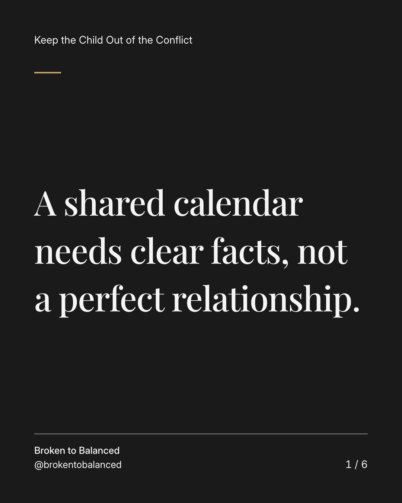
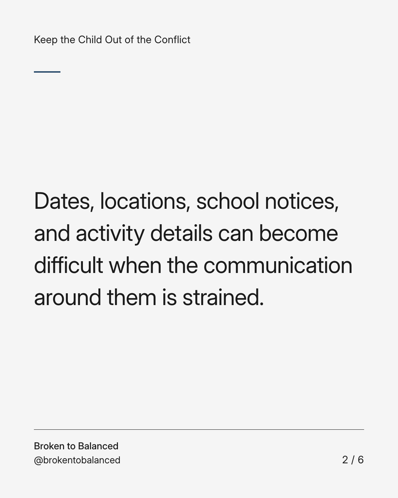
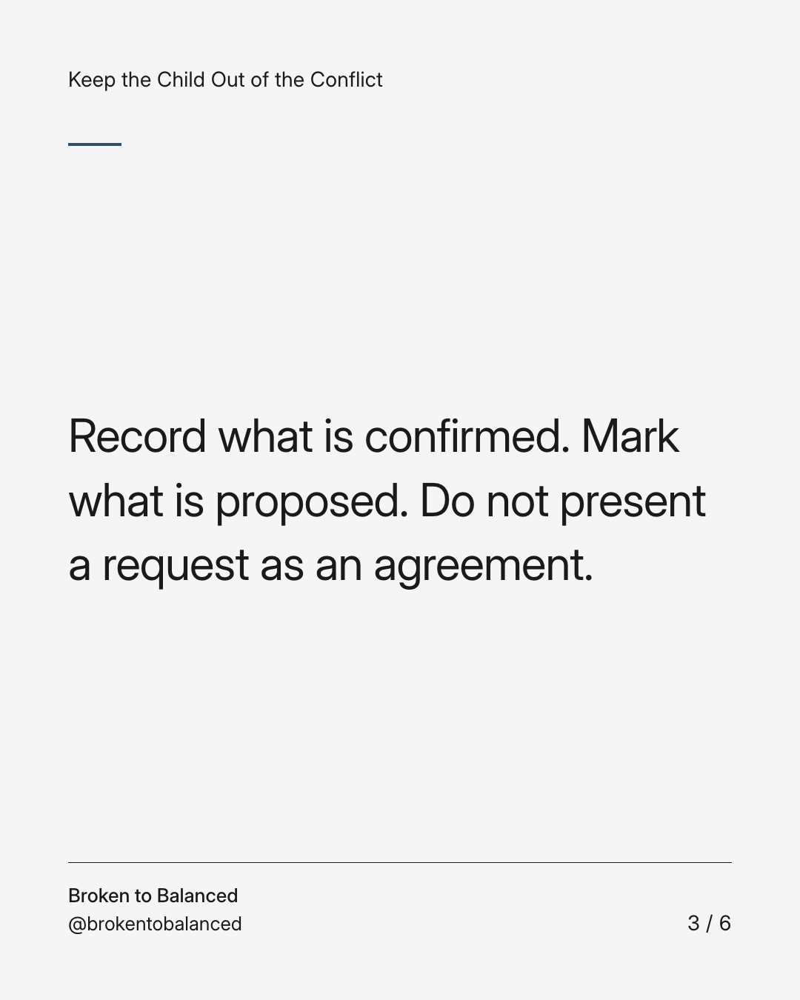
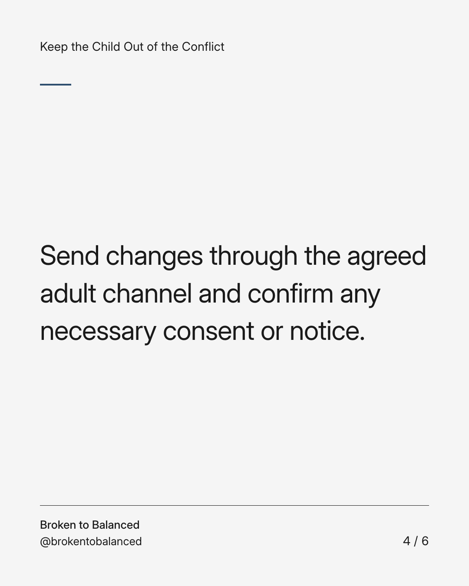
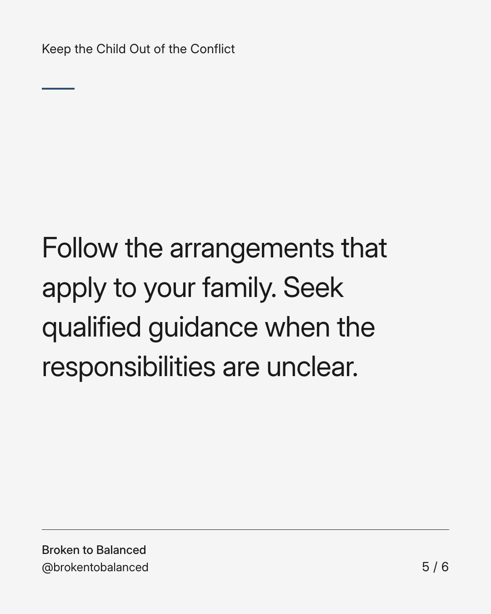
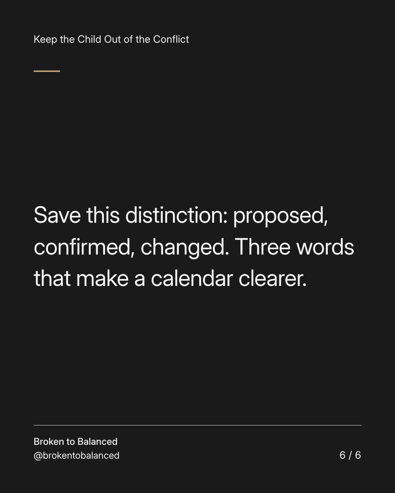

Exact text and accessibility text
A shared calendar needs clear facts, not a perfect relationship.
Slide 1 of 6. A shared calendar needs clear facts, not a perfect relationship.


Exact text and accessibility text
Dates, locations, school notices, and activity details can become difficult when the communication around them is strained.
Slide 2 of 6. Dates, locations, school notices, and activity details can become difficult when the communication around them is strained.


Exact text and accessibility text
Record what is confirmed. Mark what is proposed. Do not present a request as an agreement.
Slide 3 of 6. Record what is confirmed. Mark what is proposed. Do not present a request as an agreement.


Exact text and accessibility text
Send changes through the agreed adult channel and confirm any necessary consent or notice.
Slide 4 of 6. Send changes through the agreed adult channel and confirm any necessary consent or notice.


Exact text and accessibility text
Follow the arrangements that apply to your family. Seek qualified guidance when the responsibilities are unclear.
Slide 5 of 6. Follow the arrangements that apply to your family. Seek qualified guidance when the responsibilities are unclear.


Exact text and accessibility text
Save this distinction: proposed, confirmed, changed. Three words that make a calendar clearer.
Slide 6 of 6. Save this distinction: proposed, confirmed, changed. Three words that make a calendar clearer.
Exact caption
Plain-text fallback: select and copy the caption.